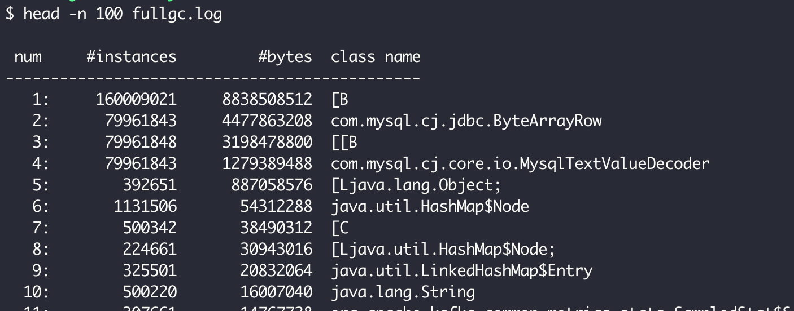
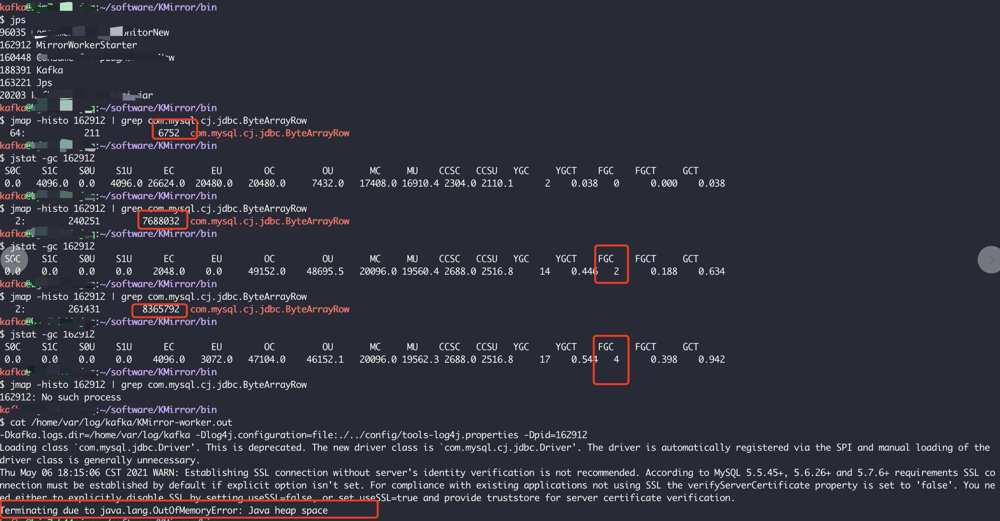
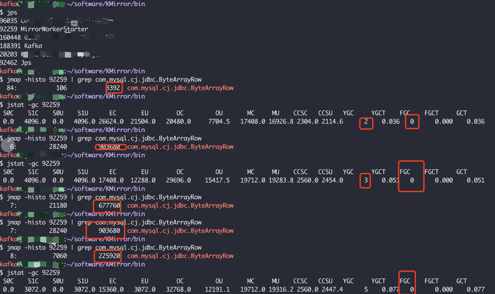

记一次线上服务Full GC问题排查
有一个线上服务多个集群出现FGC，降低集群压力之后并没有改善。
背景
- 这是一个kafka mirror服务，用来在多个kafka集群之间进行数据同步。
- mirror服务是无状态的，因此一般情况下FGC不会对系统产生严重影响，但是仍然存在较大风险。
排查过程
一. 缩小范围
FGC是从五一长假期间开始发生的，并且在FGC发生之前，在两个FGC集群中增加过任务，因此推测可能与集群压力较大有关系，为了确定这一推测，在五一长假结束之后，将新增加的任务全部迁移至同一个mirror集群A，使另一个mirror集群B状态与出现FGC之前完全相同，但是，事与愿违，集群B的FGC没有恢复，仍然存在问题。
因此，基本可以确认本次FGC与五一长假期间集群压力增加没有关系，需要具体分析FGC的原因，确认是否存在内存泄漏的情况。
二. 具体分析
首先通过jmap查看内存的占用情况：
1
jmap -histo ${PID}

可以发现，
com.mysql.cj.jdbc.ByteArrayRow这个对象占了4G多的内存（总内存32G），虽然代码中有查询mysql代码，但是查询结果都已经解析存放在了Map、List等对象中。为了确认该mysql对象是不是查询的临时变量，会不会被FGC清理，主动找一台机器执行FGC，
1
jmap -histo:live ${PID}
发现mysql对象占用的大小并未减少且仍在增加，推测这个mysql对象应该是引起FGC的原因。
查看代码发现，除了一处定期执行的SQL查询外，在任务不变的情况下，其他代码在系统启动后都不会进行SQL查询。并且，这条定期执行的SQL执行周期在这个版本中并没有发生变化，一直是2分钟一次。
1
2
3
4
5kafkaScheduler.schedule("update-Maps-Task", updateMapsTask, 20000, 120000, TimeUnit.MILLISECONDS)
def updateMapsTask() {
mysqlUtil.updateTopicMap("SELECT * FROM table2")
}验证
com.mysql.cj.jdbc.ByteArrayRow对象的内存占用是否与上述Scheduler有关：- 找一台机器每2分钟查询一次
com.mysql.cj.jdbc.ByteArrayRow对象大小，发现每两次查询到的对象大小之间的差值均相同，为395360 - 根据服务启动时间，按照每两分钟增长395360B的速度进行计算，得到
com.mysql.cj.jdbc.ByteArrayRow对象大小为4GB，该估算值与当前通过jmap看到的对象大小一致
基本可以确认是这个定时查询导致的。
- 找一台机器每2分钟查询一次
进一步验证：
- 重启服务，发现
com.mysql.cj.jdbc.ByteArrayRow对象特别小； - 将定时任务周期从2分钟改为3秒，发现
com.mysql.cj.jdbc.ByteArrayRow对象3分钟内增长了15MB，且与估算值一致。
- 重启服务，发现
问题修复：
通过查看代码和Google发现，需要显式关闭mysql查询使用的
Statement对象和ResultSet对象，修复验证：
JVM内存设置为50MB，定时任务周期设置为3秒。
修复前，mysql内存不断增加，出现几次FGC，直到OOM 。

修复后，未出现FGC，有YGC，YGC之后mysql内存被回收 。

总结
- 旧版本代码虽然也是2分钟执行一次查询，但是查询数据表不同，旧版本数据表中只有2条数据，新版本数据表中有7000+数据，内存积累很慢，所以旧版本一致没有发现问题。
- 查询mysql时需要及时关闭
Statement对象和ResultSet对象，否则会因为对象一直被引用而无法自动进行垃圾回收。 - 分析FGC问题时需要主动使用jmap等工具，尽早发现问题。